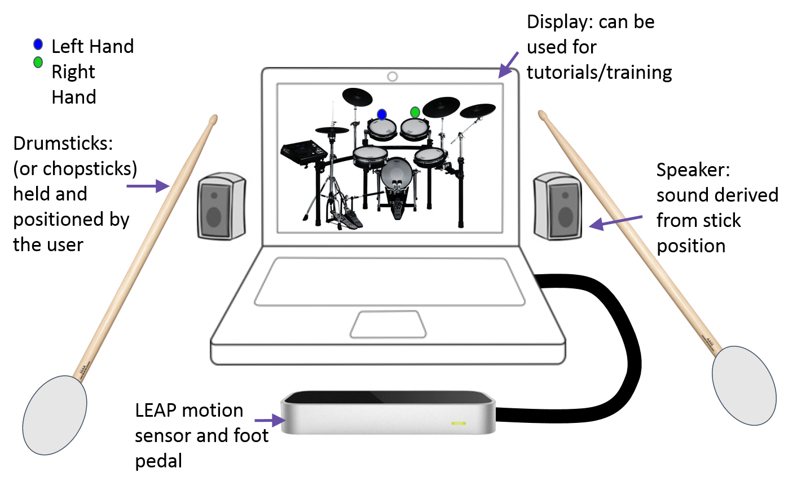
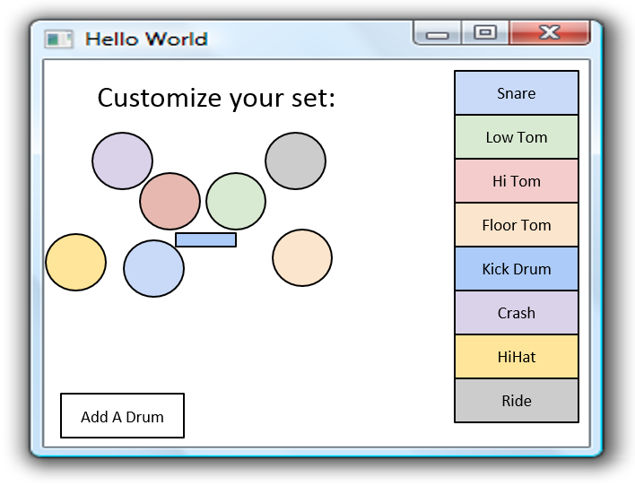
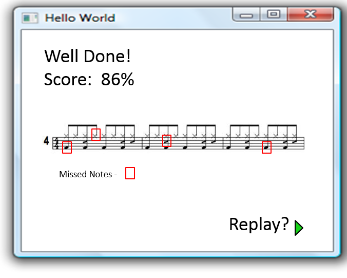

Concept Description
The Virtual Percussive Studio will combine the Drum Hero and Drumkit on the Go concepts into a portable, cost effective, and functional drum experience. The user will use two sticks in conjunction with a motion tracking unit to spatially select which drum sounds should be produced. Below is an operational diagram of our proposed product.

All of the motion tracking will be performed by the Leap Motion sensor. This device can already track a pair of human hands reliably, and various Application Programming Interfaces (APIs) that have been developed allowing us to interface with the device through Python, Java, C++, as well as other languages. The Leap sensor will be connected to a laptop computer that will perform computations and produce the desired sounds.
The user will use the two included drumsticks to "tap" or "strike" a specific area in space. This motion will be captured by the Leap sensor, and will be analyzed by software to determine the location and acceleration of both drum sticks. Once the acceleration of a drum stick passes a pre-set threshold, the system will interpret the motion of that stick as a "strike", and the software will use the position data to select an appropriate sound.
All sounds will be processed using the MIDI technical standard. This will grant interchangeability to all sounds used throughout the system, which in turn will allow us to give users the ability to customize their drum kits. The VPS will accept “Library” files which will specify the desired sound output, which is not limited to traditional “drum” sounds. Users can add different instruments, synthetic sounds, or short clips to create a totally unique experience.
Users will also be able to customize the layout of their drum kit. As seen in the figure below, the user can select the location of each drum, as well as add additional drums. Each circle can be dragged into position to select the approximate spatial region used by each drum.

To further improve the user experience, multiple "modes" will be created. The standard "Play" mode gives the user the freedom to hit any drum and create whatever pattern they chose. The "Tutorial" or "Training" mode gives the user a pre-programmed sequence of notes designed to teach basic drumming techniques. Users will receive visual and haptic feedback based on their performance. The "Battle" mode will allow users to challenge their friends to a "Drum Off" to decide once and for all who is the best drummer.
